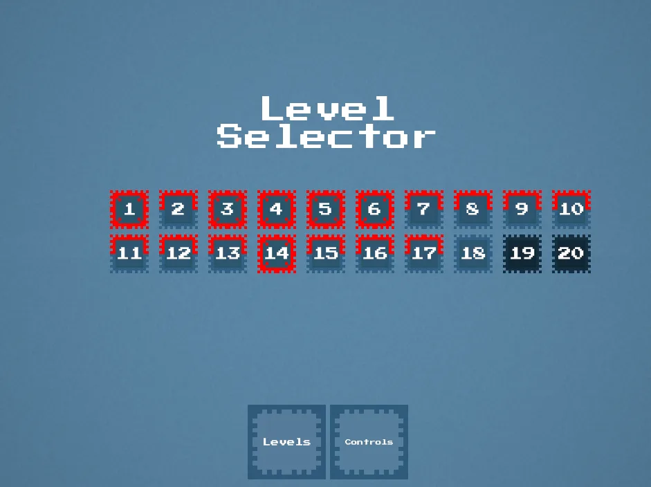

HeavyLight
A 2D puzzle platformer built on one rule: light has weight. Lamps push whatever stands in their beam, crates and you included.
Playable here. Also on itch.io.
The brief
HeavyLight was a challenge I set myself: one mechanic, some physics, a lot of level design. Built in under four weeks.
Every level is one loop and one decision: where to step out.
- ReadFind the lamps, crates, exit.
- SwitchPress E. The timer starts.
- RideBeams push you and crates.
- StopStep out and you stop dead.
- ExitNext level: one new thing.
The rule
A beam is a physical force you cannot fight. Where it ends matters as much as where it starts: step out and you stop dead.
A room in the game's own tiles: the player between two wall lamps, a crate over a floor lamp.
Crates treat the beam as their new down: aim a lamp sideways and the crate falls sideways.
Lamps
Timers are the whole difficulty curve: the same lamp is a lift in one level and a trap in the next.
Upward beams lift the player to the crate's ledge, then a sideways beam carries the crate across to the key.
One new thing per level
Twenty levels, each adding one thing: the first lamp, timers, crates, spikes, beams that push down. Nothing is introduced twice.
The clues
The story is optional. Touch a wisp and it bursts into a thought from the man in red, an investigator on a case everyone called normal.
Find them all and three secret levels open, ending on a choice: leave, fight, or sign.

The journal, on ESC: a full red frame is every clue found, half is passed, plain is reached.
Built to be reused
I wrote it as a base, not a one-off. Conclusus reused it for 30 levels and four new mechanics, in less time.
Under it: Unity's 2D platformer template and my own controller.
What it taught me
I left the camera to the engine's stock tools, and it fought me the whole way. Since then, anything that has to feel right I write myself.